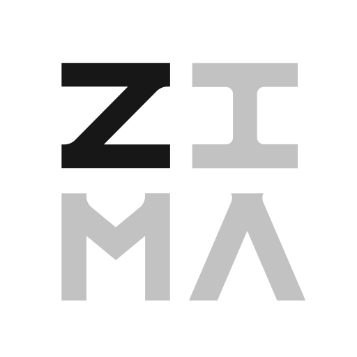

Catálogo comunitário
Descobre aplicações num só lugar, com documentação técnica sobre a integração ZimaOS.
O teu homelab. As tuas apps. Uma só loja.
Descobre aplicações para servidores, NAS e ambientes self-hosted. Pesquisa o catálogo, explora cada projeto e acompanha a evolução de uma loja criada para consultar aplicações num só lugar.
A MrStore disponibiliza o catálogo técnico no formato ZimaOS App Store v2. A instalação de cada aplicação exige confirmação no dispositivo e na versão do sistema.

ZimaOSCatálogo técnico v2Explorar não é instalar: o catálogo pode ser consultado num navegador. Só é anunciado o formato de loja ZimaOS v2. A instalação e a segurança das aplicações não estão certificadas. Consultar guia ZimaOS ↗
De servidores multimédia a ferramentas de produtividade. Pesquisa e explora as aplicações selecionadas para a MrStore (sem certificação própria).
Uma montra pensada para simplificar a pesquisa e a consulta de projetos self-hosted, sem comprometer a transparência técnica.
Descobre aplicações num só lugar, com documentação técnica sobre a integração ZimaOS.
Encontra aplicações por categoria, nome e arquitetura. Guarda as tuas favoritas no navegador.
Consulta o estado de publicação e os requisitos antes de instalar. A segurança é verificada, nunca presumida.
Projetos self-hosted organizados numa experiência visual consistente, com ligações às respetivas fontes.
Explora o catálogo num só local. Pesquisa, filtra, consulta as fichas técnicas e regressa às tuas aplicações favoritas quando quiseres.
Sem contas, sem pesquisa remota. Os favoritos ficam no teu navegador.

Explora aplicações e confirma os requisitos antes de instalar. A montra não instala nem atualiza contentores automaticamente; a instalação no ZimaOS deve ser validada em cada dispositivo.
https://mrpiracy94.github.io/MrStoreO endereço público não é um instalador universal. Consulta o guia de integração disponível ↗ antes de adicionar uma loja externa.
Pesquisa por nome, categoria e arquitetura.
Consulta permissões, dependências e avisos de segurança.
Utiliza as instruções técnicas do sistema apenas quando a integração estiver validada.
Explora aplicações, participa na comunidade e consulta os recursos disponíveis na MrStore.
Começar a explorar →Comunidade ↗